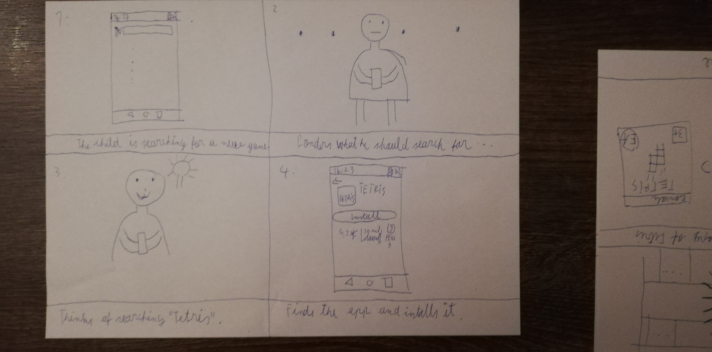
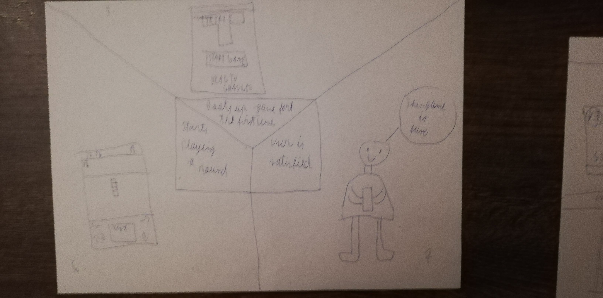
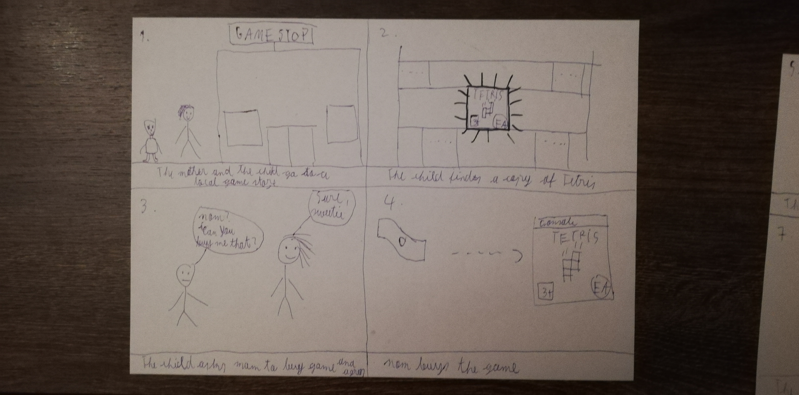
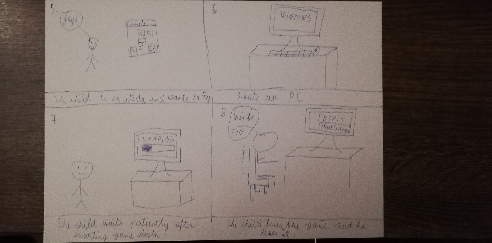

Structure
The following design patterns were used in order to make sure the users have the best interactive experience:
Main Menu


The most important screen for a game to work on in order to let the user know where to go next. Either to start the game, or enter the missions menu to see what he didn't complete. But he can also check the Options menu to change different settings such as music and sound FX, but if the user doesn't want to play anymore, he can just press the quit button to exit the application itself. The design in both versions uses the slideshow design pattern in order to siplify the overall design so that the user wouldn't be surprised by too many buttons being present in the screen.
On the Mobile version of the game, the way the user navigates is quite simple. By simply dragging the button to any dirrection he likes in order to change where to enter. When the user is decided, the user can tap on the said option to enter and do whatever he pleases.
On the PC version on the other hand, it works in two ways. While design wise it is the same as the mobile version of the game, but how you control the main menu is completely different. The major difference is that you can either press on the arrows on the screen with the mouse to navigate and click the respective option to enter or start the game, but you can also do the same thing by using the "left" and "right" keys on the keyboard with Enter being the key to access the said options.
Main Game Screen


When the users starts the game, he is greeted by the many labels that the game has such as the number of lines formed through out the run, the current level the user is playing, the number of points he gained situated on the top of the screen, the current Tetris piece the user is placing as well as the next piece that will fall next. All of the labels are sittuated beside the main game label which takes the center stage of the app as the user is focused on placing the piece so that he can form a line depending on his position and his previous placed pieces.
The main difference between the PC version and the Mobile version is that the latter has a pause button which sends the user to the pause menu where he can either quit the current session, but as well as configure the game's options on the fly by entering the options menu. This menu can be accesssed by taping the pause button in the mobile version, while on the PC version, the user presses the "Esc" key to get there.
Option Menu


The options that the user can change in the app is the music present whenever the user wants the background music either loud or quiet, but as well as changing the volum of the Sound FX wherever the user wants to up the volume higer or lower. This menu has two variants, one when the users pauses the game and the other in the main menu. The main difference between the two is that the main menu version of the options menu has the help guide button.
Missions Menu


This menu consists in how many missions the user did as shown by the first bar above the missions label which shows how many missions the user cleared so far. In both versions of the game, the user can use the arrows placed on the lower side of the center label in oder to navigate the three missions labels which represent the difficulty of the said missions ranging from beginnner, to normal, to advance all done in the slide show design pattern manner.
Help Guide


In the help menu, located in the "Help & Options", menu, the user can find the intructions of the game, specifically the controls he can use for moving thr same piece, but at the same time, it describes to the user the main objective of Tetris itself. The information itself, regardless of the version you're using is presented on the cneter of the screen, so that the user can read throughly whenever he feels overwhelemed the first time he uses the app or plays a round of Tetris.
Storyboards for both versions
Version 1: Mobile Version
 Version 2: PC Version
 Video Demo
Mobile Version Demo
PC Version Demo
User Flow
The most important aspect about the user flow of the said game is how easy the user can navigate through the menus because most menus nowadays are simple but there are menus that make you scratch your head, not knowing where to go next. That happens mainly due to the color scheme not in match with what the menu was going for, confusing fonts that can give the users a headache and not being able to read and as a result, don't know what to choose.
All of those issues that I jsut mentioned above doesn't exist in my app since my design is meant to be jsut as simlpe as the game itself, but with some modern twist of my own which can make the user go through each option with ease.